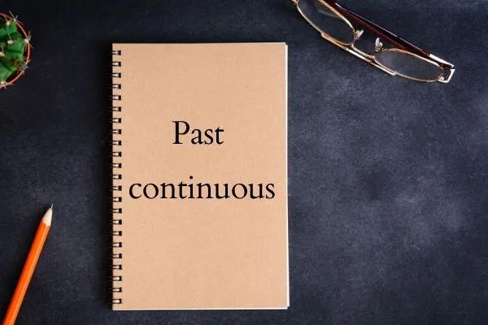

“Past continuous” é utilizado para descrever eventos ou ações em desenvolvimento no passado. Acrescenta-se o uso para ações passadas temporárias ou interrompidas por outra.
Na língua inglesa, o past continuous descreve ações e/ou eventos que estavam em progressão no passado, por isso, também é chamado de past progressive em algumas gramáticas. Existem igualmente outros usos para esse tempo verbal, por exemplo, quando temos duas ações e uma é interrompida, ou, ainda, para enfatizar certas ações no passado.
A progressão no past continous é um aspecto relevante para entender-se o seu uso, que se
diferencia de outros tempos verbais no passado. Assim, deve-se levar em consideração que as
ações no past continuous têm um caráter de andamento temporal passado, referem-se a alguma
coisa que estávamos no meio de fazer/conduzir|1|. Pode ser usado também para distinguir duas
ações passadas: uma que estava em pleno desenvolvimento quando outra a interrompeu para
ocupar seu lugar.
Além disso, usamos esse tempo verbal para enfatizar ações que estavam ocorrendo no passado.
Por fim, outra possibilidade de uso desse tempo relaciona-se com ações repetidas e
temporárias no passado. Observe alguns exemplos:
1. They were watching a film when the power went out.
(Eles estavam assistindo a um filme quando a energia acabou.)
2. My mom was working the whole night.
(Minha mãe estava trabalhando a noite toda.)
3. Last month, I was organizing our party.
(Mês passado, eu estava organizando nossa festa.)
Agora vamos classificar os exemplos segundo os usos do past continuous. No primeiro exemplo,
estamos diante de duas ações. Na primeira oração, a ação estava em desenvolvimento quando a
energia acabou, interrompendo o que eles estavam fazendo. No exemplo 2, tem-se uma ênfase ou
destaque para a ação que estava ocorrendo, isto é, o fato de a mãe ter trabalhado a noite
toda. O terceiro exemplo mostra uma ação temporária no passado.
Por ser um tempo verbal composto, ele é formado pelo verbo auxiliar to be no simple past +
present participle do verbo principal, sendo essa a estrutura das orações afirmativas. Cada
um desses verbos tem uma função específica. O verbo to be indica que se trata de um tempo
passado, enquanto o particípio do verbo principal atua na aspectualidade das ações que têm
uma duratividade e não são pontuais, tal qual ocorre no simple past|2|. Uma frase negativa
nesse tempo verbal é formada pela adição do not depois do verbo to be no simple past. Para
orações interrogativas, basta inverter o verbo principal e o sujeito.
Quando temos duas ações no passado, uma no past continuous e outra no
simple past, devemos
atentar-nos para o uso de when (quando) e de while (enquanto). O primeiro acompanha as
orações que estão no simple past, e o segundo acompanha as orações que estão no past
continuous.
Veja os seguintes exemplos:
1. I was reading a book when the door opened.
ㅤ(Eu estava lendo um livro quando a porta abriu-se.)
2. While he was sleeping, I made dinner.
ㅤ (Enquanto ele estava dormindo, eu fiz o jantar.)
Levando-se em consideração as regras estruturais do past continuous, basta praticar com
alguns exemplos pessoais. Observe os que seguem como modelo:
1. Were you having a party yesterday? No, we weren’t. We were studying until late for our
test
on Monday.
ㅤ (Vocês estavam festejando ontem? Não, não estávamos. Nós estávamos estudando até tarde
para
nossa prova na segunda-feira.)
2. She wasn’t listening to music when the dog barked.
ㅤ (Ela não estava escutando música quando o cachorro latiu.)
3. It was raining a lot yesterday morning, but I had so much to do that I couldn’t enjoy it.
ㅤ (Estava chovendo muito ontem de manhã, mas eu tinha tanta coisa para fazer que eu não pude
aproveitar.)
Normalmente, os tempos perfeitos em inglês têm uma conexão com o presente. No entanto, os
tempos verbais past perfect e past perfect continuous têm relação estreita com o passado. O
primeiro trata da relação entre duas ações passadas, mostrando que uma ocorreu antes da
outra. A oração que contém o past perfect é a que ocorreu primeiramente. Esse tempo verbal é
formado pelo verbo had + past participle.
Por outro lado, o past perfect continuous também expressa uma relação entre duas ações
passadas, mas o seu foco está na duração/desenvolvimento da própria ação passada. Formado
pelo verbo had + been + present participle (-ing).
1. She had been working. She was glad about it.
ㅤ(Ela estava trabalhando. Ela ficou feliz a respeito disso.)
2. She had worked. She looked glad about it.
ㅤ(Ela tinha trabalhado. Ela parecia feliz a respeito disso.)
Veja que, no exemplo com o past perfect continuous (1), o foco está na progressão da ação.
Enquanto no exemplo 2, com o past perfect, o foco está no resultado, ao diferenciar-se esses
dois tempos verbais.